NoSQLWHAT? Why NoSQL? Why not SQL? Is SQL going away?? |
Relational DBs held sway for almost 3 DECADES: 80s, 90s, 00s.
What started to change was this - the Internet (a BFD!!!), coupled with storage and processing revolution has enabled:
The last three items above, constitute the 3 Vs of Big Data: volume, variety, velocity
Big Data comes from a variety of sources:
Big Data can lead to, or result from, 'datafication'.
Wikipedia: Datafication is a modern technological trend turning many aspects of our life into computerised data and transforming this information into new forms of value. Examples of datafication as applied to social and communication media are how Twitter datafies stray thoughts or datafication of HR by LinkedIn and others.
In other words, it is the notion that people, our built envrironment (eg. number of freeways in the US), etc. can lead to data generation.
"Once we datafy things, we can transform their purpose and turn the information into new forms of value."
RDBMSs are simply unsuitable for the above (for handing Big Data)! A different kind of NON-RELATIONAL database scheme was needed - enter 'NoSQL' DBs.
Again - what is happening is this:
So we need the following [ie. 'one-size-fits-all' was wrong (Stonebraker)]:
Need a flexible, efficient, available, scalable solution/DB design! THAT is what NoSQL provides - high performance, high availability at a large scale.
The term NoSQL was used as early as.. 1998!
The term started to become reused in 2009, by Last.fm's developer, and subsequently by a Rackspace employee blogger who popularized it.
Today, NoSQL refers to an umbrella of technologies that are all non-relational-DB-oriented.
So - what does 'No' stand for? NoSQL DB means/meant:
db == JSON []array of {}objects, where each object ('row') is a set of a key-value pairs.
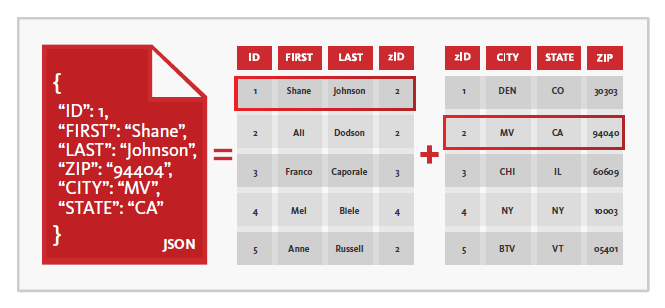
http://www.data.gov has almost 200,000+ datasets, 50,000+ of which are in JSON.
Examples: https://api.publicapis.org/random, https://health.data.ny.gov/api/views/es3k-2aus/rows.json
JSON viewer: https://bytes.usc.edu/~saty/tools/jsoned or http://jsonviewer.stack.hu/ etc.
The simplicity of the JSON scheme also makes it possible/easy to add extra data (eg metadata) to the files.
JSON can also be returned by webservers, which can even call a client function with the returned data - this is called JSON-P.
JSON can used to describe structured data in a specific format - this is called JSON-LD.
It is very straightforward to represent table data as JSON:
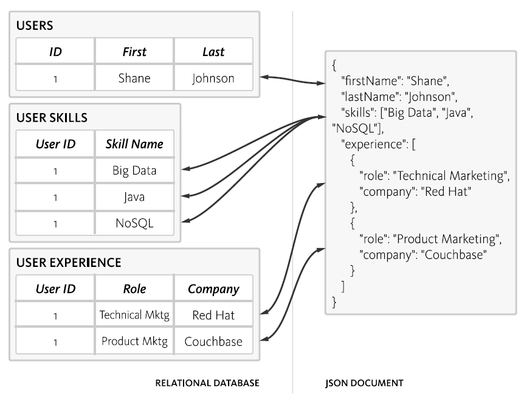
Compared to JSON, XML is more verbose (on account of opening and closing tags), but is a popular alternative format for creating DBs. Here is an example file (in addition to viewing the data here in the browser, you can use a viewer such as this one to view the XML file, or you can save locally and open with a text editor).
A NoSQL DB is:
The NoSQL DBs are characterized by their 'BASE' property, in contrast with RDBMS' 'ACID' property.
BASE stands for BAsic availability (db is up most of the time), Soft state (of consistency - consistency is not guaranteed while data is written to a node, or between replicas), Eventual consistency (at a later point in time, by push or pull, data will become consistent across nodes and replicas).
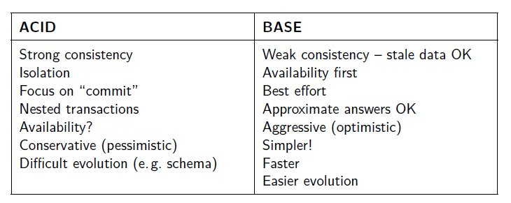
A NoSQL database does not have an explicit schema that describes the relationships between its data items - it is said to be 'schema-less'
But, calling this situation 'schema-less' is not quite appropriate - rather, the schema is **implicit** - the schema resides in the application code that reads [and writes] data - so, 'scheme-on-read' is a better way to describe how we handle such data [in comparison, RDBMS is 'schema-on-write'].
To put it differently, the DB itself "doesn't care" about what it is storing, it is the application code that imparts meaning to the data. As a result, changing the data model (eg. adding or deleting an attribute) is trivial - just write and run (application) code to make the change in the DB!
In a schema-less environment, developers use intuitive data structures (well supported by underlying host languages) to do data manipulation (including querying and updating).
Eg. JSON is very easy/intuitive to grasp, comprising of just six underlying datatypes (number, string, boolean, array, object, null). It is also quite easy to parse.
Because entire documents are stored, there is no need to perform (expensive) JOIN operations.. Also, queries can be parallelized using MapReduce.
There are [only] FOUR types of NoSQL DBs, based on their underlying data representation:
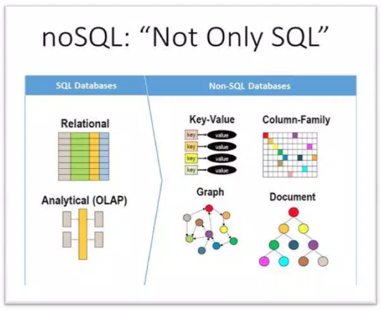
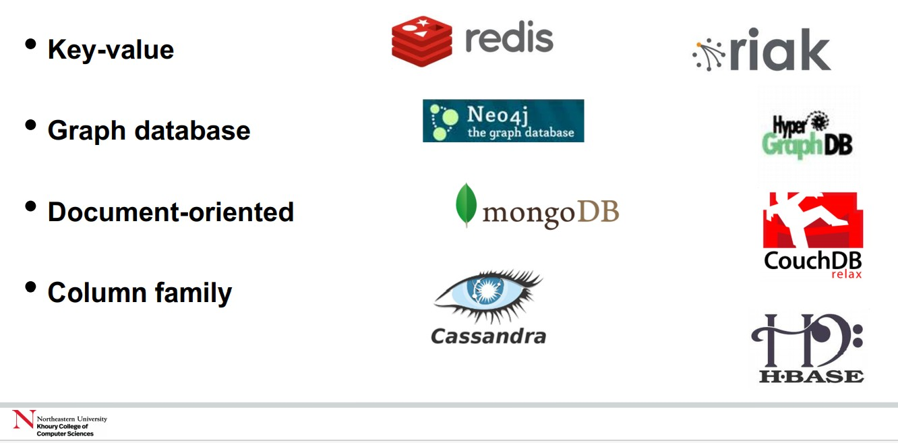
Another classification of all DB types [note the 4 NoSQL types above]:
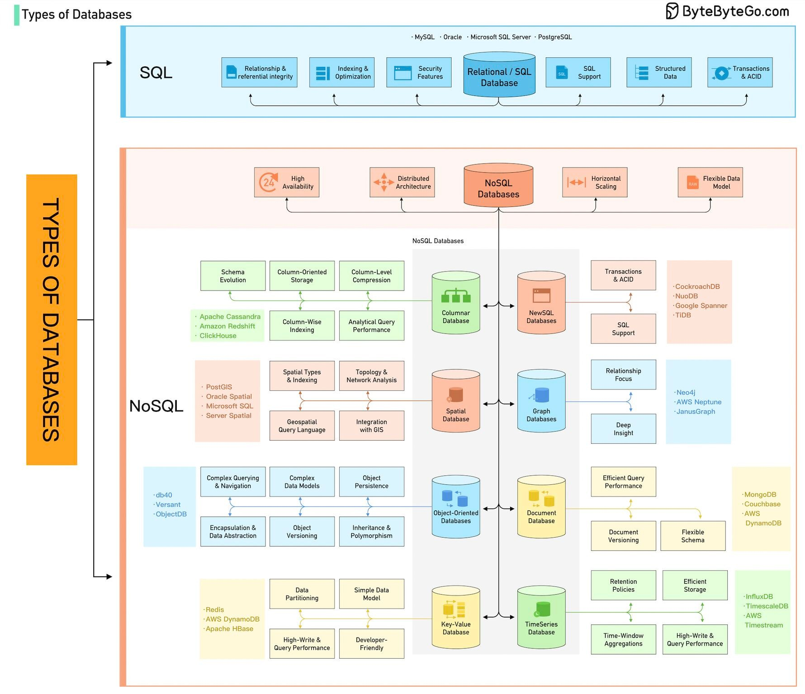
There are SO MANY NoSQL DB implementations :)
Additionally, there are now, 'vector DBs':
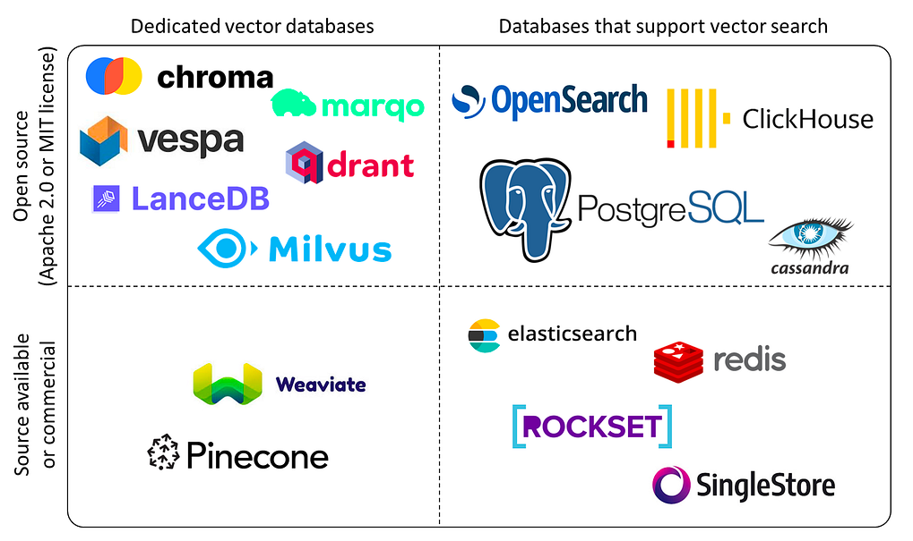
Martin Fowler (of 'Code Refactoring' fame) has an overview article on post-RDBMS alternatives, at http://martinfowler.com.
Polyglot persistence means the use of different storage technologies (ie. NoSQL DBs) to store different parts (data) of a single application. These individual data stores are then tied together by the application, using DB APIs or web services APIs.
In other words, a single application can "speak" several different storage technologies, each one leveraging its strength (eg. a key-value DB can be used for storing transient user session data). Here is a visual, from Martin's article linked above:
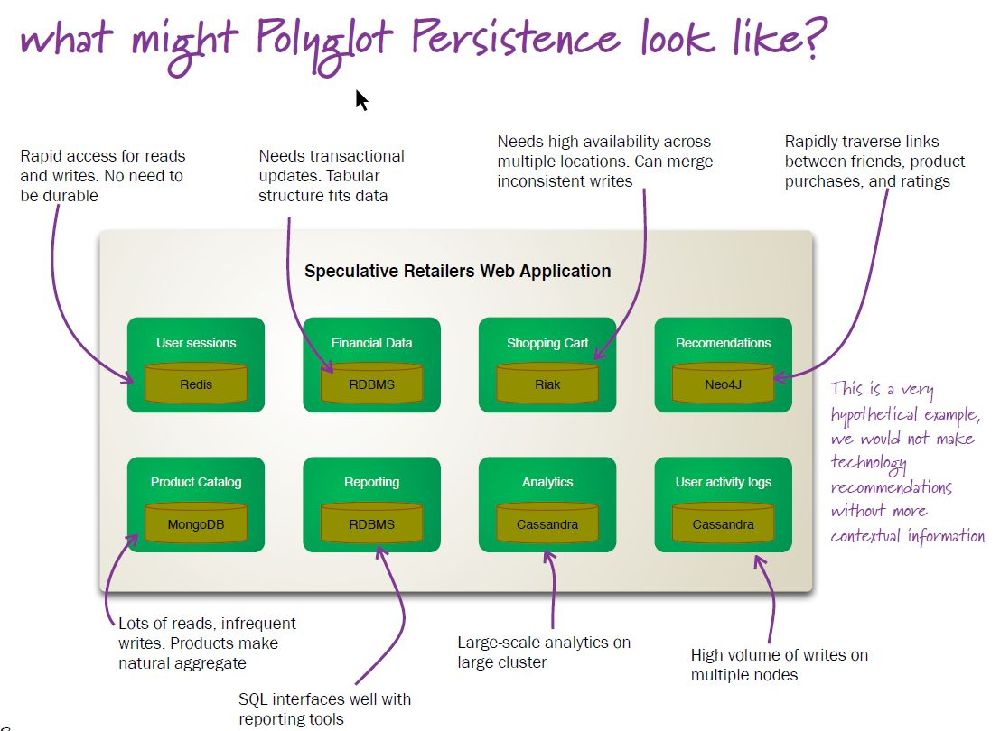
"A key-value store, or key-value database, is a data storage paradigm designed for storing, retrieving, and managing associative arrays, a data structure more commonly known today as a dictionary or hash."
So the whole db is a dictionary, which has records ("rows") which have fields (columns).
Because there is no schema, the records all don't have to contain identical fields!
The 'key' in a key-value DB, is comparable to a PK in a relation (table); the 'value' is an aggregate of all the dependent (non-PK) columns.
Querying occurs only on keys. When querying on a key, the entire value (aggregate) (for matching keys) is returned. Likewise, the entire value needs to be updated when necessary (no per-field updating).
Rapid querying of keys is possible, on account of k-v stores employing disk-based Log Structured Merge Trees (LSMs) for search - more here.
Memcached [aka memcached - all lowercase] is a high-performance, in-memory, data caching system, with a VERY simple API:
The value that is stored does not have to be atomic, it can even be an associative array (k-v pairs, aka dictionary, or hash) - that said, stored values are usually rather small (~1M). Eg. the following PHP snippet shows how an array of 6 different elements [int, float.. object] is stored in memcached, as 6 k-v pairs [note that we could have stored the entire array as a single value, but that would make it inefficient to access an individual element such as the boolean]:
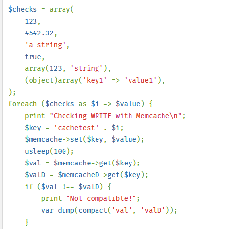
Memcached is commonly used with a 'backend' SQL store (relational DB) - a COPY of the frequently accessed data is held in memcached, for fast retrieval and update.
Quite a few languages are supported: C/C++, Java, JavaScript, Python, PHP, Ruby, Perl, .NET, Erlang, Lua, Lisp, Ocaml..
If you have access to a Linux server (including being able to run one locally on your machine), you can experiment with memcached like so.
Redis is an extremely popular k-v database, used by a variety of (social media etc.) companies to hold vast amounts of data.
For values, rather than just atomic datatypes (number, string, boolean), Redis offers richer types such as list, set, dictionary.
Dynamo is what is internally used at Amazon (as distinct from S3, offered to cloud services users).
From the Dynamo paper that they published:
"Dynamo is used to manage the state of services that have very high reliability requirements and need tight control over the tradeoffs between availability, consistency, cost-effectiveness and performance."
In Dynamo, values are stored as BLOBS (opaque bytes of binary data). Operations are limited to a single k/v pair at a time.
Only two API ops are supported:
In the above, 'context' is used to store metadata about the BLOB values, eg. version numbers (this is used during 'eventual consistency' DB updating).
Keys are hashed using the MD5 hashing algorithm, to result in appropriate storage locations (nodes).
To ensure availability and durability, each k/v pair is replicated N times (N=3, commonly) and stored in N adjacent nodes starting from the key's hash's node.
Here is a short tutorial on Dynamo - please go through it (just read it), for usage examples of the simple API [in section 3.3: putItem(), getItem(), deleteItem()].
Summary - k/v DBs are lightweight (simple), schema-less, transaction-less.
After k/v DBs, column (aka column family) DBs are the next form of data storage.
Examples: BigTable(Google), BigQuery(Google), HBase(Apache), Cassandra(Apache), SimpleDB(Amazon), RedShift(Amazon).
Rather than dealing with rows of data, we deal with columns of them. So such databases are good for aggregate queries (eg. average age of employees in a company), and queries involving just a subset of all columns (eg. retrieve a student's academic info [but not personal info]).
As the name signifies, data is stored as groups of columns (column family), as opposed to an RDBMS where data is stored as rows.
In a column family DB, data is stored using 'row keys' (each row (picturing the data as a classic relational table) is assigned a unique key, analogous to a PK).
Column: consists of a name (key) and a value; there is such a name:value pair for each row key, giving us a single column's worth of data for all rows (eg. GPAs of all students at USC).
Column family: contains columns of related data (eg. for a 'Users' DB, the columns might be Name, Age, DOB, Address, Email), for all rows. A column family would have many rows of data, where for each row, there would be multiple columns and values. Eg:
Cath:{
firstname:'Cath',
lastname:'Yoon'
}
,
Terry:{
firstname:'Terry',
lastname:'Cho'
}
Supercolumn: is a named grouping of columns; consists of a key-value pair, where the key (which would be the supercolumn's name) is used to index values consisting of raw column data, itself in the form of key-value pairs [in other words, the value looks like column family data]. Supercolumns are how we group related columns. Eg. here is a supercolumn called username, used to group the firstname and lastname columns (rather confusingly, shown just for a single, implied, rowkey, of a column family):
username:{firstname:'Cath', lastname:'Yoon'}
In other words, a supercolumn is a k:v pair where the key is the name of the supercolumn, and value would be column family data.
Supercolumn family: a collection of supercolumns. As noted above, a supercolumn has a name (key), and contains as its value, a group of actual column names and their values (ie a column family). So a supercolumn family can be thought of as a 'namespace' for a group of supercolumns (it is also a k:v pair). Note that a supercolumn family is ALSO equivalent to a table, but with extra info (which would be the names of its supercolumns). Eg. here is a supercolumn family (called UserList, with the "extra info" being supercolumn names 'username', 'address', 'account'):
UserList={
Cath:{
username:{firstname:'Cath',lastname:'Yoon'}
address:{city:'Seoul',postcode:'1234'}
},
Terry:{
username:{firstname:'Terry',lastname:'Cho'}
account:{bank:'hana',accountID:'5678'}
}
}
In the above, 'UserList' is the supercolumn family name, pointing to supercolumns called 'username' and 'address'.
Supercolumn families are meant for 'inverted indexing' [which is an index of terms that point to possibly multiple documents where they occur; in contrast, in a regular document index, we simply store the locations (eg. page numbers) of terms occurring in that document], we don't always *need* to use them in a column family DB [they are optional].
Here is another example of a column family (two column families, actually - Musician, Band) - note that ColumnFamily1 (Musician) has 'jagged' (uneven) data:
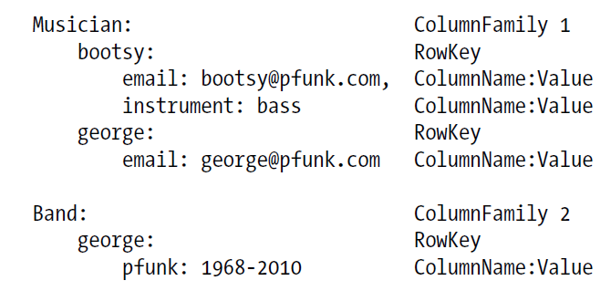
Summary: in a column family, row keys directly contain (as values) column data, similar to a rectangular table; in contrast, in a supercolumn family, row keys contain (as values), k:v pairs, with supercolumn ("column group") keys, and 'column_name:column_value' values [so there is an extra level of indirection, provided by the supercolumn names]. Column family -> column data; supercolumn family -> supercolumns -> column data.
BigTable - "a distributed storage system for managing structured data that is designed to scale to a very large size: petabytes of data across thousands of commodity servers".
Used in Google Earth, Google Analytics, Google Docs, etc.
"BigTable has achieved several goals: wide applicability, scalability, high performance, and high availability."
Cassandra was originally developed by Facebook and open-sourced in 2008.
Also used by Twitter, Digg, Rackspace.
Data model is as follows:
Rows - which are identified by a string-key of arbitrary length. Operations on rows are atomic per replica no matter how many columns are being read or written.
Column Families - which can occur in arbitrary number per row.
Columns have a name and store a number of values per row which are identified by a timestamp (like in Bigtable). Each row in a table can have a different number of columns, so a table cannot be thought of as a rectangle. Client applications may specify the ordering of columns within a column family and supercolumn which can either be by name or by timestamp.
Supercolumns have a name and an arbitrary number of columns associated with them. Again, the number of columns per super-column may differ per row.
Cassandra's core API is very simple:
Thrift API, plus language bindings for Ruby, Python, C#, Java.
Cassandra's query language is "CQL" - somewhat like SQL, but no WHERE, JOIN, GROUP BY, ORDER BY; also, results are returned as JSON. UPDATE: "these days", Cassandra DOES implement full SQL-like functionality.
CREATE KEYSPACE animalkeyspace
WITH REPLICATION = { 'class' : 'SimpleStrategy' ,
'replication_factor' : 1 };
use animalkeyspace;
CREATE TABLE Monkey (
identifier uuid,
species text,
nickname text,
population int,
PRIMARY KEY ((identifier), species));
INSERT INTO monkey (identifier, species, nickname, population)
VALUES ( 5132b130-ae79-11e4-ab27-0800200c9a66,
'Capuchin monkey', 'cute', 100000);
Select * from monkey;
./sstable2json $YourDataDirectory/data/animalkeyspace/monkey/animalkeyspace-monkey-jb-1-Data.db
[
{
// The row/partition key
"key": "5132b130ae7911e4ab270800200c9a66",
// All Cassandra internal columns
"columns": [
[
// The Cluster key. Note the cluster key does not have any data associated with it. The key and the data are same
"Capuchin monkey:",
"",
// Time stamp which records when this internal column was created.
1423586894518000
],
[
// Header for the nickname internal column. Note the cluster key is always prefixed for every additional internal column.
// Actual data
"Capuchin monkey:nickname",
"cute",
1423586894518000
],
[
// Header for the population internal column
"Capuchin monkey:population",
// Actual Data
"100000",
1423586894518000
]
]
}
]
Cassandra uses SSTables to persist data, which is implemented using LSM.
A document DB is a 'collection' of 'documents' (analogy with an RDMS: documents are equivalent to rows, and a collection is equivalent to a table).
The basic unit of storage in a document DB is, well, a document - this can be JSON, XML, etc. There can be an arbitrary number of fields (columns and values, ie. k/v pairs) in each document.
A document DB can be considered to be a more sophisticated version of a k-v store.
In a document DB, a key is paired with a document (which is its 'value'), where the document itself can contain multiple k/v pairs, key-array pairs, or even key-document pairs (ie nested documents).
Here are leading document-oriented DBs:
You might enjoy this Couchbase application note :)
Consider the following diagram, which shows how blog posts could be organized:
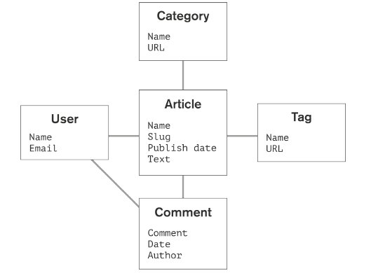
The corresponding document store would look like this:
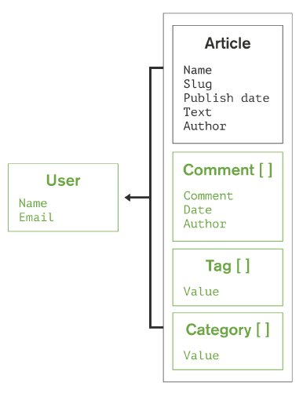
Note that document contents are saved as BSON (Binary JSON) in order to save disk space. As a reminder, values can be atomic data, arrays or objects; fields can vary from document to document (no set schema).
Queries are non-SQL, of course, and offer richness and flexibility. For example, MongoDB offers the following query types:
The following snippets are for MongoDB.
// create a collection ("table")
db. createCollection (, {< configuration parameters >})
// a sample doc
{
title : " MongoDB ",
last_editor : "172.5.123.91" ,
last_modified : new Date ("9/23/2010") ,
body : " MongoDB is a..." ,
categories : [" Database ", " NoSQL ", " Document Database "] ,
reviewed : false
}
// add a doc into a coll
db.< collection >. insert ( { title : " MongoDB ", last_editor : ... } );
// retrieve
db.< collection >. find ( { categories : [ " NoSQL ", " Document Databases " ] } );
db.< collection >. find ( { title : " MongoDB " );
db.< collection >. find ( { $where : " this .a ==1" } );
// array size comparison [num categories == 2]
{ categories : { $size : 2} }
// results processing
db.< collection >. find ( ... ). sort ({< field >: <1| -1 >}). limit (). skip ();
// potentially DANGEROUS!
db. eval ( function (< formal parameters >) { ... }, );
// MapReduce
db.< collection >. mapreduce ( map : < map - function >,
reduce : < reduce - function >,
query : < selection criteria >,
sort : < sorting specificiation >,
limit : < number of objects to process >,
out: A graph is a data structure comprised of vertices and edges:
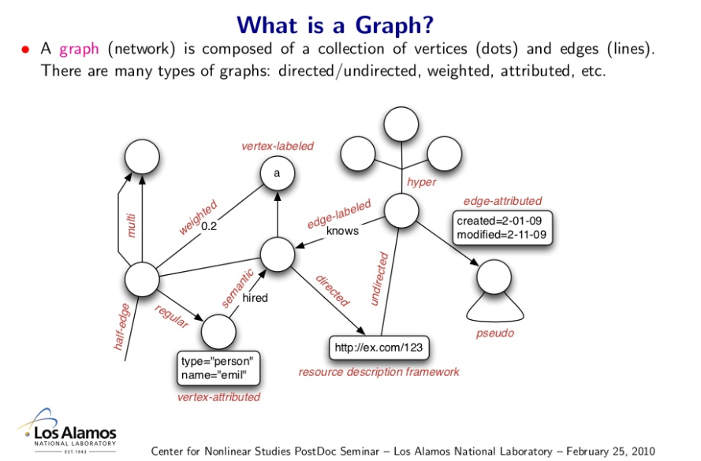
A graph database uses (contains) graph entities such as nodes (vertices), relations (edges), and properties (k-v pairs) on vertices and edges, to store data.
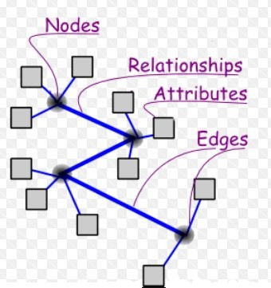
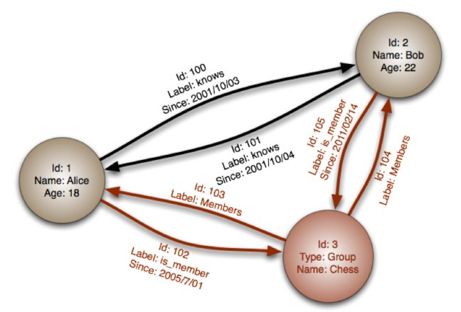
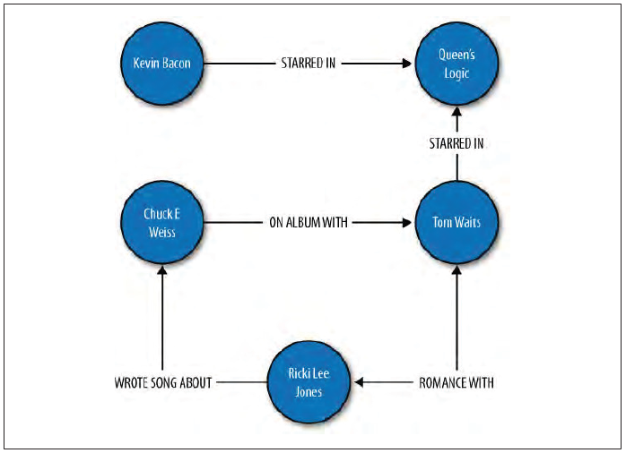
Note that in addition to internal names/IDs, nodes and edges can have properties (attributes and their values, ie. k/v pairs).
A graph DB is said to be 'index free', since each node directly stores pointers to its adjacent nodes.
In a graph db, the focus is on relationships between 'linked data'.
A rich variety of graphs can be stored and manipulated - directed graphs, trees, weighted graphs, hypergraphs, etc.
These are popular implementations:
Uses: social networks, recommendation engines..
Gartner: "Graph analysis is possibly the single most effective competitive differentiator for organizations pursuing data-driven operations and decisions, after the design of data capture."
Compared to a relational scheme, a graph offers a compact, normalized, intuitive way of expressing connections/relationships.
Here is a relational way to express employee-dept relations, and the corresponding graph-based way:
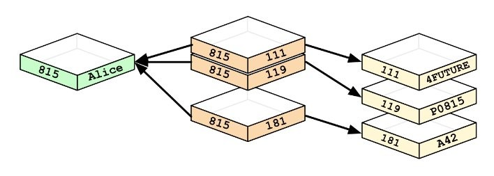
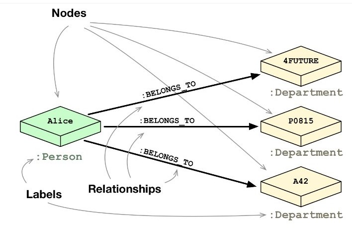
Each row in a table becomes a node, and columns (and their values), node properties.
Here is an E-R diagram, and a graph version:
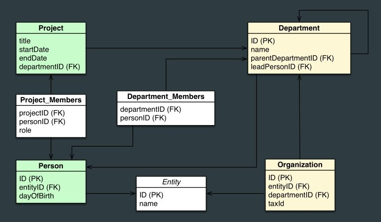
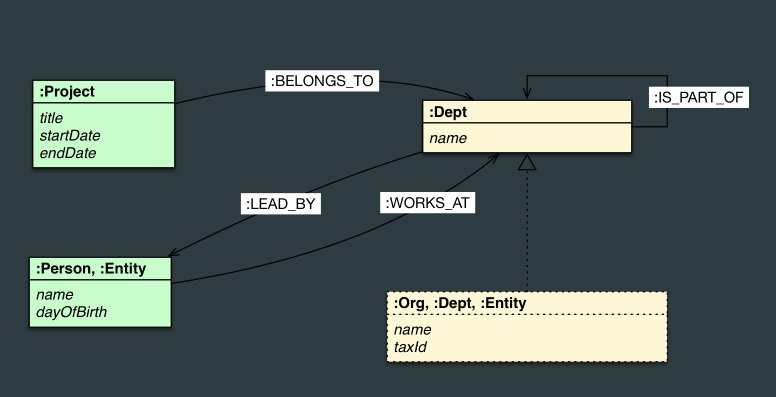
As you can see, the graphs help model relationships in the form of connections between nodes.
It is pretty straightforward to create nodes and edges, and attach properties to them; after that, it is equally simply to do queries on the resulting database.
In Neo4J, we use Cypher, a declarative graph query language - modeled after SQL, augmented with graph-specific functionality.
In the following, we compare a SQL query, and its Cypher equivalent:
SELECT name FROM Person
LEFT JOIN Person_Department
ON Person.Id = Person_Department.PersonId
LEFT JOIN Department
ON Department.Id = Person_Department.DepartmentId
WHERE Department.name = "IT Department"
MATCH (p:Person)<-[:EMPLOYEE]-(d:Department)
WHERE d.name = "IT Department"
RETURN p.name
Using the Neo4J JDBC driver, a query to return "John's dept" can be embedded in Java:
Connection con = DriverManager.getConnection("jdbc:neo4j://localhost:7474/");
String query =
"MATCH (:Person {name:{1}})-[:EMPLOYEE]-(d:Department) RETURN d.name as dept";
try (PreparedStatement stmt = con.prepareStatement(QUERY)) {
stmt.setString(1,"John");
ResultSet rs = stmt.executeQuery();
while(rs.next()) {
String department = rs.getString("dept");
....
}
}
TinkerPop is a very interesting graph traversal language (actually, an entire graph computing framework). Here is how to get started on exploring it.
Aside: here is an interesting use case, for a graph DB [notes here].
It is useful to ponder how you would specify a graph in a certain format - a pre-determined format would make it possible for an application to read and write graphs.
A triple store (or triplestore, or RDF) database stores triples of (subject,predicate,object) [or equivalently, (subject,attribute(property),value)]. A triple defines a directed binary relation, via its predicate/attribute/property. In relational form, we express this as predicate(subject,object).
Subject: what we are describing.
Predicate: a property of the subject.
Object: the predicate's (property's) value.
In a triple, the predicate is given equal status to subject and object [upcoming examples will make this clear].
As an aside, if a fourth attribute (context) is also stored, then we'd call the DB a quad store, or 'named graph'. There are even 'quints' (with an extra 'name' or 'ID' attribute).
We issue 'semantic queries' to search a triple store DB.
Note that a triple store DB is a restricted form of a graph DB.
Here is an example of a triple store - it is a flat (non-hierarchical) list (bag) of triplets, specified as subject (node), predicate (relationship), object (another node). The column on the left shows node IDs, that's not part of the triple.
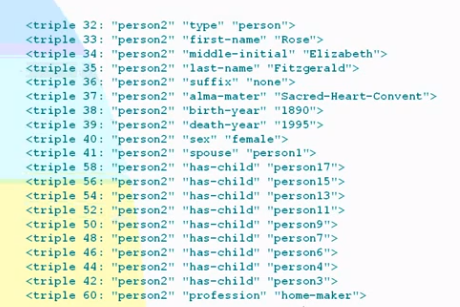
The beauty is that such a triplet list can be grown 'endlessly', eventually connecting EVERYTHING to EVERYTHING ELSE! There is no schema to modify - just keep adding triplets to the DB!
Implementations:
Querying a triplet store can be done in one of several RDF (what is THAT?) query languages, eg. RDQL, SPARQL, RQL, SeRQL, Versa.. Of these, SPARQL is currently the most popular.
The output of a triple store query is called a 'graph'.
Queries tend to span disparate data, perform complex rule-based logic processing or inference chaining (AI-like).
Eg. given
:human rdfs:subClassOf :mammal
:man rdfs:subClassOf :human
an RDF database can infer
:man rdfs:subClassOf :mammal
If you want LARGE triple store datasets to play with, look at DBpedia, which is all of Wikipedia in RDF form!
These databases (triple stores) are set up to run in one of three modes:
{kind=link}
{kind=link}
{kind=link}